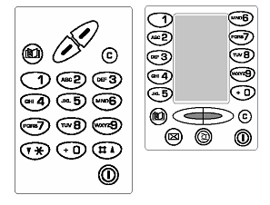
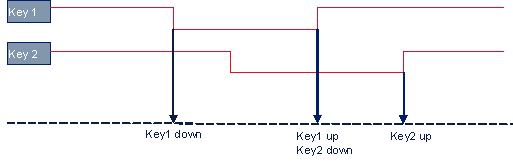
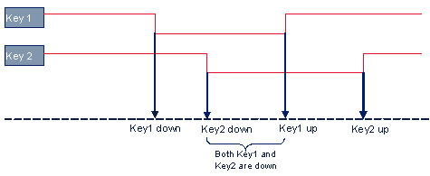

Devices Overview
1 Introduction
Devices module defines the common interface to the devices such as display, keyboard and real time clock, camera, etc.
The class Device is a defined abstract interface, where the implementation is hardware-dependant. When changing the implementation of a device, it must be assured that the public interface is not changed. It is not necessary that the class stays binary compatible, as usually APOXI must be compiled anyway when major changes of devices are done.
2 Keyboard
The Keyboard in APOXI is configurable and there can be different keypads which differ in the number of keys and the position of keys as shown in the following figure.
 |
2.1 Handling of keys
The keyboard driver provides the SDL signals indicating the key press and key release. It also provides a timestamp giving the time when the key has been pressed or released. All other events from the keyboard are handled by the keyboard device.
The applications can get the key states in two ways as described in the following:
1) Applications can ask for the key state of a particular key. An example for this key state checking is given in the following code:
Keyboard::GetKeyState(KeyboardConfig::GetNumber(5))
2) Whenever there is a keystate change, the keyboard device will send the corresponding message to the application. To receive these messages, applications should register for them. The messages send from the keyboard to applications are described in the following:
Key Down Message
This message is send to the application each time the user presses a key.
Key Up Message
This message is send to the application each time a key is pressed.
Long Key Press Message
This message is send to the application when ever a particular key is pressed for a specified duration of time. For example, suppose long key press time period has been specified as 1000 Millie seconds. In such case a long key press message will be send to the application whenever user presses a key and not releases it until 1000 milliseconds. The time limit for the long key press is defined in the KeyboardConfig.
Very Long Key Press Message
This message will be send to the application when the user presses a particular key for a very long time period. This time period is specified in the KeyboardConfig.
Key Auto Repeat Message
This message will be send when the user presses a key for a very long time period. It indicates the same effect as pressing a key severel times,i.e, auto repetitions of the key press. The application can use Key Auto Repeat information for some special actions. For example it can be used to move down or up through menu items by pressing the down or up key for a long time. The auto repeat delay and the auto repeat intervals are also specified in the KeyboardCofig.
Key locking
Keyboard illumination
There are three states of keyboard illumination as listed in the following:
Multikey mode
Key board device supports multi key mode. When multi key mode is not enabled only a single key press message will be send to the application at a time even if the user presses more than one keys at a time. This is shown in the following figure 1.
 |
Figure 1. Single key mode
As shown in Figure 1 key2 down message will be send to the application only after the release of the Key1 even though the key2 has been pressed before the release of key1.
When multikey mode is enabled, it is possible for the applications to get the message indicating multikey press when user presses more than one keys at the same time. This is illustrated in Figure 2.
 |
Figure 1 MultiKey mode
As shown in Figure 2, when key2 is pressed before the release of key1, both key1 and key2 down messages will be send to the application.
3 Display
Display device provides methods for accessing the display in a generic way. The direct use of the display device bypasses the APOXI window system.
The display device use an internal frame buffer where all the drawings are done. After finishing the drawingprocess those parts which have changed on the frame buffer are copied to the display buffer by invoking Display::Refresh. The area which has been changed is defined by the so called blitting rectangle. The display has two buffer modes, they are:
4 Video channel
The video channel is a separate part of the display device and can be retrieved by invoking Display::GetVideoChannel. Video channel is for playing video.
It is generally assumed that the content to be displayed via video channel is located in a separate buffer (or certain number of buffers), the process of transferring this content to the display is called rendering and is typically assisted by hardware (e.g. a companion chip). Rendering includes some transformation like color conversion, resizing, rotation, flipping/mirroring, clipping/cropping. Most crucial for rendering is the correct mixing of the content in this channel with the display content. This operation is called overlaying.
5 Led
Led is the APOXI device abstraction interface for LED hardware driver. APOXI Led Provides the following functionalities:
6 Real Time Clock
RealTimeClock is the APOXI device abstraction interface for RTC hardware driver. The Real Time Clock provides the following functionalities:
Note: Kernel module provides an interface called AlarmManager for handling multiple alarms
7 Charger
The charger interface in APOXI provides the following functionalities:
Some of message interfaces provided by charger are listed in the following:
8 Camera
Camera device is for accessing hardware cameras. The application has the possibility to obtain a special camera, which is bound to the hardware ID. The camera object is defined statically in the camera configuration (CameraConfig). For each camera device one camera object exists. Functionalities provided by the Camera device are described in the following:
9 Video Camera
The video camera device is derived from camera and offers all functionality of a still camera. In addition it has an extended interface for video capturing functionality. The functionalities of the video camera are listed in the following: